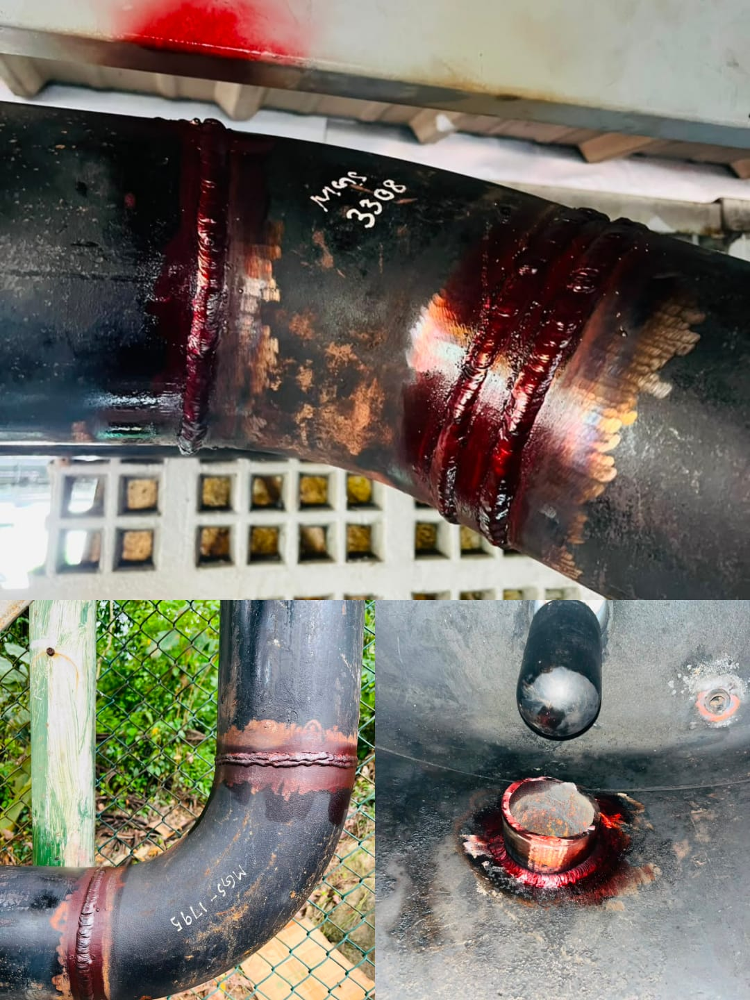

Dye Penetrant Testing (DPT) Of Welding Joints Of The Thermic Oil Lines
Dye Penetrant Testing (DPT) is a non-destructive testing (NDT) method used to detect surface-breaking defects such as cracks, porosity, and lack of fusion. It was applied to the welding joints of thermic oil lines, which operate at high temperatures, to confirm weld quality and prevent leaks, ensuring safe and reliable operation of the system.
Contact Us